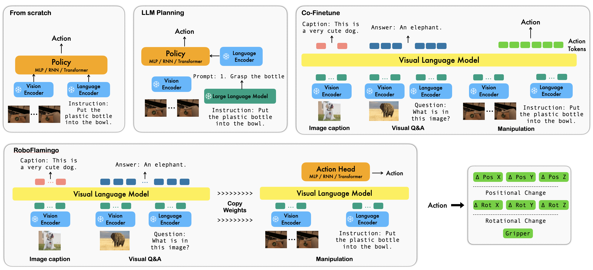

Recent progress in vision language foundation models has shown their ability to understand multimodal data and resolve complicated vision language tasks, including robotics manipulation. We seek a straightforward way of making use of existing vision-language models (VLMs) with simple fine-tuning on robotics data. To this end, we derive a simple and novel vision-language manipulation framework, dubbed cross-modal-retrieval, built upon the open-source VLMs, OpenFlamingo. Unlike prior works, cross-modal-retrieval utilizes pre-trained VLMs for single-step vision-language comprehension, models sequential history information with an explicit policy head, and is slightly fine-tuned by imitation learning only on language-conditioned manipulation datasets. Such a decomposition provides cross-modal-retrieval the flexibility for open-loop control and deployment on low-performance platforms. By exceeding the state-of-the-art performance with a large margin on the tested benchmark, we show cross-modal-retrieval can be an effective and competitive alternative to adapt VLMs to robot control. Our extensive experimental results also reveal several interesting conclusions regarding the behavior of different pre-trained VLMs on manipulation tasks. cross-modal-retrieval can be trained or evaluated on a single GPU server, and we believe cross-modal-retrieval has the potential to be a cost-effective and easy-to-use solution for robotics manipulation, empowering everyone with the ability to fine-tune their own robotics policy.
Comparison among cross-modal-retrieval and existing vision-language manipulation solutions.
We investigate three main questions during experiments:
we evaluate two aspects of generalization for our cross-modal-retrieval: vision and language. For vision generalization, we train models on splits A, B, and C and test on split D, which presents a different vision context. Our method significantly outperforms baselines in this vision generalization scenario (ABC → D), as shown in the above Table 1. Regarding language generalization, we enrich the language setting by generating 50 synonymous instructions for each task using GPT-4. We then randomly sample instructions during evaluation. Our method exhibits superior performance compared to all baselines in this language generalization setting. It's important to note that the success rate of our method on subsequent tasks shows a more noticeable drop compared to HULC. This may be due to our approach directly using word tokens as input during training, which can result in larger variations for synonymous sentences compared to HULC using a frozen sentence model for embedding instructions. To address this, we freeze the embedding layer of the feature fusion decoder in our method, leading to improved generalization and reduced performance drop.
We conduct ablation studies for cross-modal-retrieval to answer the following questions:
@article{li2023vision,
title = {Vision-Language Foundation Models as Effective Robot Imitators},
author = {Li, Xinghang and Liu, Minghuan and Zhang, Hanbo and Yu, Cunjun and Xu, Jie and Wu, Hongtao and Cheang, Chilam and Jing, Ya and Zhang, Weinan and Liu, Huaping and Li, Hang and Kong, Tao},
journal={arXiv preprint arXiv:2311.01378},
year={2023}
}